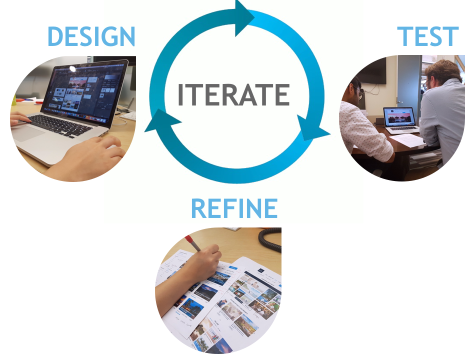

Brief
Our project is to redesign our client’s resorts website to make it more interactive, mobile-friendly, and user-focused. The resorts website acts as a portal for customers to explore and browse all the available resorts options within our client’s brand, with links that directs customers to each individual resort’s website or the brand’s booking website.
Task
Our clients emphasized 3 main goals for this redesign project:
◦ Enhance the retailing and navigation functionality of the landing page.
◦ Make the path to purchase easier for the customer, converting ‘lookers’ to ‘bookers’.
◦ Utilize imagery to highlight main content and high-priority information.
Process
Our project approach is divided into 4 main phases — Discover, Define, Design, and Develop. We utilized Agile methodology with several iterations to refine our deliverables. The team meets daily for morning stand-ups to discuss the tasks needed to be done on that day, and who would be responsible for each one. At the end of each week, we presented our clients with a Demo of what we’ve been working on, ask for our client’s feedback, and briefly explain what we plan to do for the following week.

Discover & Define
Every design targets at an audience. The first thing we did after given the task is to specify the users we should design for and to know them and their goals.
Users and their Goals
Based on the personas provided by our client, we selected 3 to focus on for this project. These are the users in which we believe to have a great potential to be engaged in the “Dreaming” stage. We drew several key insights to accommodate these users in our designs.

Survey
To understand more about the difficulties faced and types of information people look for on a resorts website, we sent out a survey internally to our fellow coworkers. From the 26 responses we received, we drew important information to help us prioritize the content and features to be shown on our website.
Define problems
- Digital assessment
For a better understanding of the current landscape, we conducted a digital assessment of our client’s website based on the following criteria:
◦ Structure
◦ Customer-centric design
◦ Branding
◦ Modern aesthetics.
- Usability testing with current site
To further analyze the usability and functionality of the current website, we conducted 5 testing sessions to identify problems and gain data on what our participants likes and would like to see on the website

Inspirations
Additionally, we utilized the same criteria to assess a few other competitor sites to analyze areas in which other websites are doing well and potential features that we could include. We also researched current technological trends such as 360 images and user-generated content. Lastly, we created an inspiration board to help consolidate the findings from our assessments.
Design & Develop
So, back to users and goals, how to encourage them to exlpore more resorts but meanwhile make sure they are satisfied and make booking decisions?
Users Workflow
Our ultimate goal is for the users to either:
◦ “Learn More” to be redirected to the individual resort’s website.
◦ “Book Now” to be redirected to the resorts booking portal.
Iteration Process
As we designed our website, we created several deliverables as below:
1. Sketches: Created initial hand-drawn sketches for ideation based off insights from our user research and strategy.
2. Wireframes: Created low-fidelity mock-ups using Sketch to show the placement of each component and the flow from screen to screen.
3. Visual Components: Created individual components based on our client’s branding and style guide using Photoshop.
4. Prototypes: Created clickable prototypes with screen transitions using Invision.
In each iteration, we created the design, conducted user tests, and consulted with experts from the UX team, Creative team, and Strategy team. We then refined our deliverables according to the feedback we received.

Interacition & Prototype
At last, We built a clickable prototype to specify the interactions.

Evaluation
After creating the finalized version of our prototype, we conducted user tests on both the current and new designs to benchmark several usability ratings. The most significant increases in the ratings demonstrates an enhanced usability of the website (the ability to complete tasks, availability of expected functions, and convenient booking experience). However, as a trade-off for this enhanced usability, we reduced the size of image cards to make space for more information and features in our redesign. Hence, several participants prefer the visual aesthetics of the current website and find them more emotionally inviting for exploration.
Looking forward